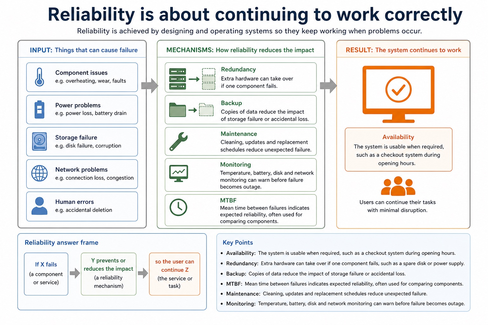
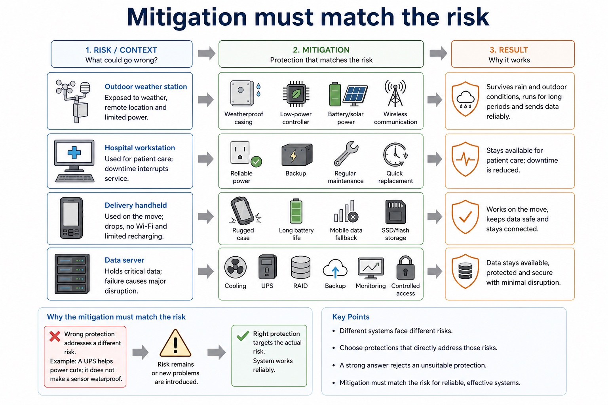

Hardware does not fail because it is dramatic. It fails because dust, heat and power cuts are patient.
This lesson focuses on environmental and reliability considerations
when selecting hardware. You will identify risks, choose protective
measures, and explain how reliability affects a user's task.
Identifyenvironmental risks such as heat, moisture, dust and shock
Explainreliability ideas such as redundancy, backup, maintenance and availability
Justifyhardware protection using risk, mitigation and consequence
risk -> mitigation -> consequence
"It is durable" is a start. "It is sealed, so dust cannot damage outdoor sensors" is an answer.
Why this matters
Cambridge-style questions reward context. The same device can be suitable in an office and unsuitable on a windy roof in winter.
Common trap
Reliability is not just "good quality". It is the chance the system continues to work correctly when it is needed.
Warm-up hook
A sensor works perfectly on a desk. Then it is placed outside in rain, dust and heat. What changed?
Click the best first explanation. The sensor did not suddenly become lazy; its environment changed.
Think about heat, water, dust, vibration, power and maintenance access.
Knowledge point 1
Environmental factors change hardware suitability
Factor
Possible effect
Suitable protection
Exam warning
Temperature
Overheating can slow, shut down or damage components.
Lesson fact: Do not just say "fast"; explain heat tolerance or cooling.
Lesson fact: Moisture / water
Lesson fact: Corrosion or short circuits can stop the system working.
Lesson fact: Sealed casing, waterproof enclosure, humidity control
Lesson fact: Name what water does to reliability.
Lesson fact: Dust / dirt
Knowledge point 2
Reliability is about continuing to work correctly
AvailabilityThe system is usable when required, such as a checkout system during opening hours.RedundancyExtra hardware can take over if one component fails, such as a spare disk or power supply.BackupCopies of data reduce the impact of storage failure or accidental loss.MTBFMean time between failures indicates expected reliability, often used for comparing components.MaintenanceCleaning, updates and replacement schedules reduce unexpected failure.MonitoringTemperature, battery, disk and network monitoring can warn before failure becomes outage.
Reliability answer frame: "If X fails, Y prevents or reduces the impact, so the user can continue Z."
Reliability is about continuing to work correctly

Reliability is about continuing to work correctly: source-grounded visual explanation.
Lesson fact: Availability The system is usable when required, such as a checkout system during opening hours.
Lesson fact: Redundancy Extra hardware can take over if one component fails, such as a spare disk or power supply.
Lesson fact: Backup Copies of data reduce the impact of storage failure or accidental loss.
Lesson fact: MTBF Mean time between failures indicates expected reliability, often used for comparing components.
Lesson fact: Monitoring Temperature, battery, disk and network monitoring can warn before failure becomes outage.
Lesson fact: Reliability answer frame: "If X fails, Y prevents or reduces the impact, so the user can continue Z."
Knowledge point 3
Mitigation must match the risk
Outdoor weather stationWeatherproof casing, low-power controller, battery/solar power and wireless communication.Hospital workstationReliable power, backup, regular maintenance and quick replacement to reduce downtime.Delivery handheldRugged case, long battery life, mobile data fallback and SSD/flash storage.Data serverCooling, UPS, RAID, backup, monitoring and controlled access.
A strong answer rejects an unsuitable protection. A UPS helps power cuts; it does not make a sensor waterproof.
Mitigation must match the risk

Mitigation must match the risk: source-grounded visual explanation.
Lesson fact: Outdoor weather station Weatherproof casing, low-power controller, battery/solar power and wireless communication.
Lesson fact: Hospital workstation Reliable power, backup, regular maintenance and quick replacement to reduce downtime.
Lesson fact: Delivery handheld Rugged case, long battery life, mobile data fallback and SSD/flash storage.
Lesson fact: Data server Cooling, UPS, RAID, backup, monitoring and controlled access.
Lesson fact: A strong answer rejects an unsuitable protection. A UPS helps power cuts; it does not make a sensor waterproof.
Interactive tool
Environmental risk evaluator
Worked examples
Write reliability answers that earn marks
Your turn
Practice with instant checking
Mistake debugging
Fix the weak reliability answer
"Use a UPS because it makes the computer waterproof."
A UPS protects against short power cuts and allows safe shutdown. Waterproofing needs a sealed or weatherproof enclosure.
"Reliability means the hardware is expensive and therefore good."
Reliability means the hardware continues to work correctly when required. Cost may be one factor, but redundancy, maintenance and environmental protection are more precise evidence.
Exam-style questions
Questions with expandable MS
Attempt first, then expand the mark scheme. Credit depends on naming the risk, matching a mitigation, and explaining the effect on reliability.
Summary
Environmental reliability in six exam sentences
HeatCooling and ventilation reduce overheating and shutdowns.
WaterSealed enclosures reduce corrosion and short circuits.
DustFilters and cleaning protect cooling and sensors.
ShockRugged casing and SSDs reduce mobile damage.
PowerUPS and surge protection reduce interruption and data loss.
FailureBackup, redundancy and maintenance reduce downtime.
Homework
Clear tasks
Write a 6-mark answer recommending hardware protections for a remote weather station.
Explain how a UPS, backup and RAID each improve reliability, using a different sentence for each.
Compare an office desktop and a rugged handheld device for a delivery driver using environmental risks.
Rewrite this weak sentence: "Use expensive hardware because it is reliable."
Weather station: mention weatherproof casing, low power, battery/solar, wireless communication and accurate sensors.
UPS: keeps power briefly and allows safe shutdown. Backup: restores data. RAID: can keep service running after a disk failure depending on type.
Delivery: rugged, portable, shock-resistant and long battery life are more relevant than desktop processing power.
Rewrite: name a reliability feature such as redundancy, MTBF, protective casing or maintenance schedule.